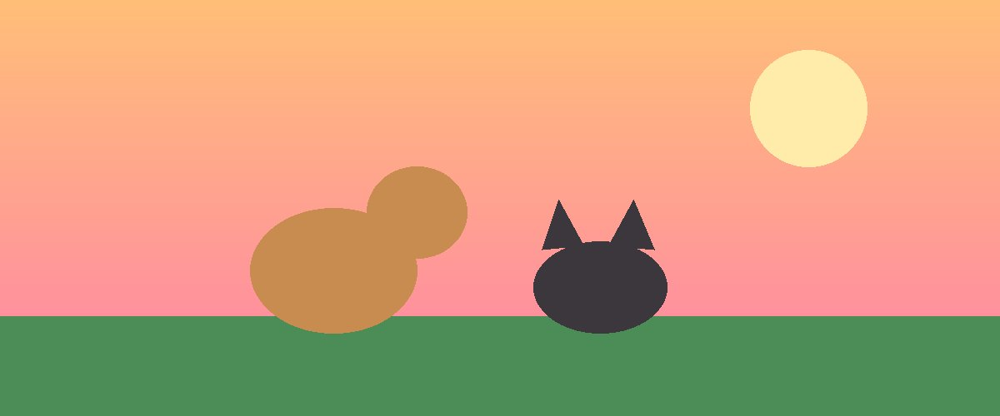

Adote e transforme uma vida
Resgatamos, cuidamos e encontramos lares responsáveis para cães e gatos abandonados.
Fazer meu cadastro
Resgatamos, cuidamos e encontramos lares responsáveis para cães e gatos abandonados.
Fazer meu cadastro